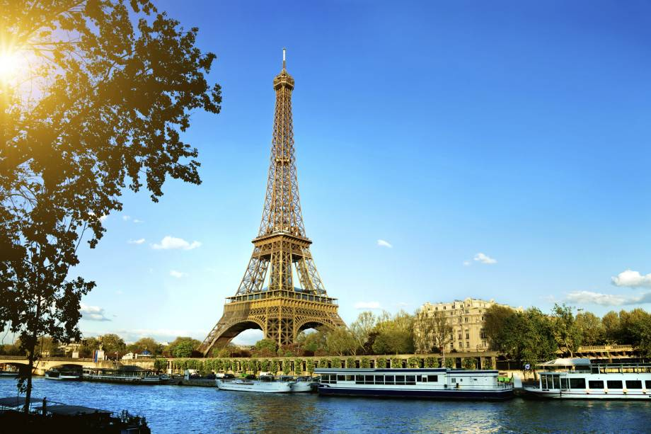
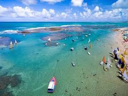

Porto de Galinhas
São-Paulo 10/02/2019

Inicialmente, a praia era chamada de Porto Rico, devido à sua abundância em pau-brasil. No auge da escravidão no Brasil,
era o principal ponto de comércio de escravos ilegais no nordeste brasileiro. Muitas vezes, os mesmos chegavam
escondidos embaixo de engradados de galinhas-d'angola. A chegada dos escravos ilegais ao porto costumava ser anunciada
pela frase tem galinha nova no porto! Desta forma, a praia de Porto Rico ficou conhecida como Porto de Galinhas.
A partir do início da década de 1990, tornou-se um polo turístico. Isto gerou danos à vida marinha na região, obrigando
o controle da atividade dos turistas a partir de 2014
Bruce Wayne
Bruce Wayne se mostra perante a sociedade como um playboy irresponsável e superficial que vive da fortuna herdada dos pais (conquistada quando os pais de Bruce investiram em Gotham antes de a cidade tornar-se uma grande metrópole) e dos lucros obtidos pelas Empresas Wayne, uma grande empresa no ramo da tecnologia de ponta. Contudo, Wayne também é conhecido por suas contribuições para caridade, especialmente através da Fundação Wayne, fundação dedicada a ajudar vítimas de crimes e prevenir que pessoas tornem-se criminosas.Gramado
Campinas 08/02/2019
Gramado é um município do estado do Rio Grande do Sul, no Brasil. Localiza-se na Serra Gaúcha, mais precisamente na
Região das Hortênsias, a uma latitude 29º 22' 44" sul e a uma longitude 50º 52' 26" oeste, estando a uma altitude de 830
metros. Sua população estimada em 2017 é de 35 047 habitantes.[3] Possui uma área de 237,019 quilômetros quadrados. Seu
principal acesso se dá através da RS-115, embora também seja atendida pelas rodovias RS-235 e RS-373.
Sua demografia é etnicamente variada, com forte influência alemã e italiana, o que se reflete especialmente na culinária
e na arquitetura urbana e rural. Com uma economia voltada ao turismo, a cidade recebe anualmente milhões de turistas
nacionais e estrangeiros.